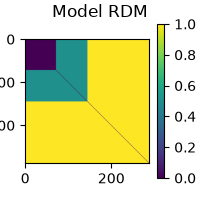
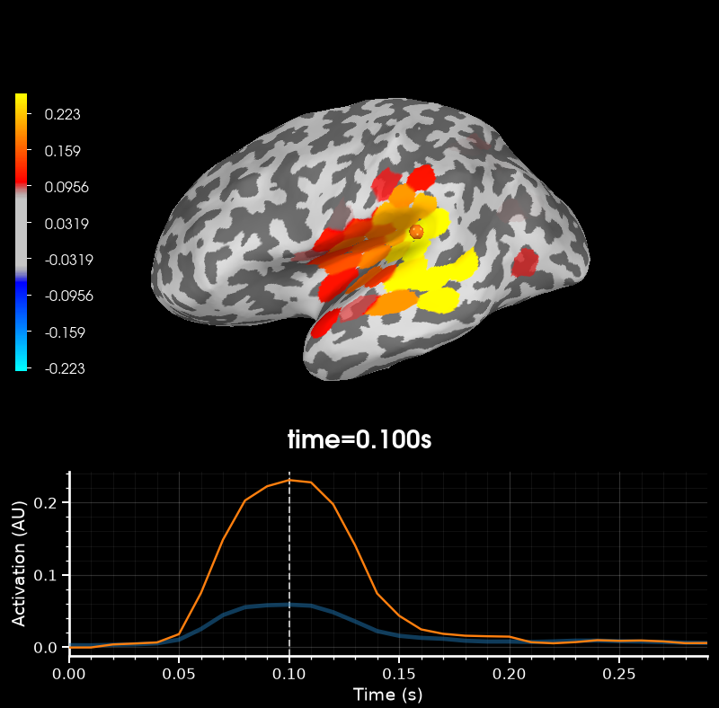
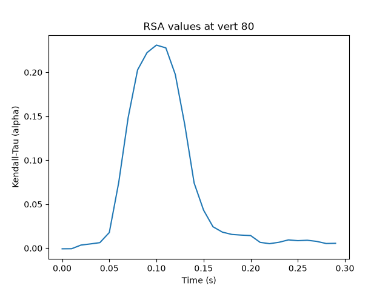

Note
Go to the end to download the full example code.
Source-level RSA using a searchlight on surface data#
This example demonstrates how to perform representational similarity analysis (RSA) on source localized MEG data, using a searchlight approach.
In the searchlight approach, representational similarity is computed between the model and searchlight “patches”. A patch is defined by a seed vertex on the cortex and all vertices within a given radius. By default, patches are created using each vertex as a seed point, so you can think of it as a “searchlight” that scans along the cortex.
The radius of a searchlight can be defined in space, in time, or both. In this example, our searchlight will have a spatial radius of 2 cm. and a temporal radius of 20 ms.
The dataset will be the MNE-sample dataset: a collection of 288 epochs in which the participant was presented with an auditory beep or visual stimulus to either the left or right ear or visual field.
# sphinx_gallery_thumbnail_number=2
import mne
import mne_rsa
# Import required packages
from matplotlib import pyplot as plt
mne.set_log_level(False) # Be less verbose
mne.viz.set_3d_backend("pyvista")
'pyvistaqt'
We’ll be using the data from the MNE-sample set. To speed up computations in this example, we’re going to use one of the sparse source spaces from the testing set.
sample_root = mne.datasets.sample.data_path(verbose=True)
testing_root = mne.datasets.testing.data_path(verbose=True)
sample_path = sample_root / "MEG" / "sample"
testing_path = testing_root / "MEG" / "sample"
subjects_dir = sample_root / "subjects"
Creating epochs from the continuous (raw) data. We downsample to 100 Hz to speed up the RSA computations later on.
raw = mne.io.read_raw_fif(sample_path / "sample_audvis_filt-0-40_raw.fif")
events = mne.read_events(sample_path / "sample_audvis_filt-0-40_raw-eve.fif")
event_id = {"audio/left": 1, "audio/right": 2, "visual/left": 3, "visual/right": 4}
epochs = mne.Epochs(raw, events, event_id, preload=True)
epochs.resample(100)
It’s important that the model RDM and the epochs are in the same order, so that each row in the model RDM will correspond to an epoch. The model RDM will be easier to interpret visually if the data is ordered such that all epochs belonging to the same experimental condition are right next to each-other, so patterns jump out. This can be achieved by first splitting the epochs by experimental condition and then concatenating them together again.
epoch_splits = [
epochs[cl] for cl in ["audio/left", "audio/right", "visual/left", "visual/right"]
]
epochs = mne.concatenate_epochs(epoch_splits)
Now that the epochs are in the proper order, we can create a RDM based on the experimental conditions. This type of RDM is referred to as a “sensitivity RDM”. Let’s create a sensitivity RDM that will pick up the left auditory response when RSA-ed against the MEG data. Since we want to capture areas where left beeps generate a large signal, we specify that left beeps should be similar to other left beeps. Since we do not want areas where visual stimuli generate a large signal, we specify that beeps must be different from visual stimuli. Furthermore, since in areas where visual stimuli generate only a small signal, random noise will dominate, we also specify that visual stimuli are different from other visual stimuli. Finally left and right auditory beeps will be somewhat similar.
def sensitivity_metric(event_id_1, event_id_2):
"""Determine similarity between two epochs, given their event ids."""
if event_id_1 == 1 and event_id_2 == 1:
return 0 # Completely similar
if event_id_1 == 2 and event_id_2 == 2:
return 0.5 # Somewhat similar
elif event_id_1 == 1 and event_id_2 == 2:
return 0.5 # Somewhat similar
elif event_id_1 == 2 and event_id_1 == 1:
return 0.5 # Somewhat similar
else:
return 1 # Not similar at all
model_rdm = mne_rsa.compute_rdm(epochs.events[:, 2], metric=sensitivity_metric)
mne_rsa.plot_rdms(model_rdm, title="Model RDM")

<Figure size 200x200 with 2 Axes>
This example is going to be on source-level, so let’s load the inverse operator and apply it to obtain a cortical surface source estimate for each epoch. To speed up the computation, we going to load an inverse operator from the testing dataset that was created using a sparse source space with not too many vertices.
inv = mne.minimum_norm.read_inverse_operator(
testing_path / "sample_audvis_trunc-meg-eeg-oct-4-meg-inv.fif"
)
Especially when creating source estimates for single epochs, it is important to think
what source orientations to use. Setting pick_ori="vector" is a solid choice,
which means using all three XYZ components of the estimated source activity, and so is
pick_ori="normal" which means using the source ortientation orthogonal to the
cortex. See the
https://mne.tools/stable/auto_tutorials/inverse/35_dipole_orientations.html for more details.
epochs_stc = mne.minimum_norm.apply_inverse_epochs(
epochs, inv, lambda2=0.1111, pick_ori="vector"
)
Performing the RSA. This will take some time. Consider increasing n_jobs to
parallelize the computation across multiple CPUs.
rsa_vals = mne_rsa.rsa_stcs(
epochs_stc, # The source localized epochs
model_rdm, # The model RDM we constructed above
src=inv["src"], # The inverse operator has our source space
stc_rdm_metric="correlation", # Metric to compute the MEG RDMs
rsa_metric="kendall-tau-a", # Metric to compare model and EEG RDMs
spatial_radius=0.02, # Spatial radius of the searchlight patch
temporal_radius=0.02, # Temporal radius of the searchlight path
tmin=0,
tmax=0.3, # To save time, only analyze this time interval
n_jobs=1, # Only use one CPU core. Increase this for more speed.
verbose=True,
) # Set to True to display a progress bar
# Find the searchlight patch with highest RSA score
peak_vertex, peak_time = rsa_vals.get_peak(vert_as_index=True)
# Plot the result at the timepoint where the maximum RSA value occurs.
rsa_vals.plot("sample", subjects_dir=subjects_dir, initial_time=peak_time)

Calculating source space distances (limit=20.0 mm)...
Not adding patch information, dist_limit too small
Performing RSA between SourceEstimates and 1 model RDM(s)
Spatial radius: 0.02 meters
Using 498 vertices
Temporal radius: 2 samples
Time interval: 0-0.3 seconds
Number of searchlight patches: 14940
0%| | 0/14940 [00:00<?, ?patch/s]Creating spatio-temporal searchlight patches
0%| | 15/14940 [00:00<01:46, 140.21patch/s]
0%| | 30/14940 [00:00<01:45, 140.96patch/s]
0%| | 45/14940 [00:00<01:45, 141.68patch/s]
0%| | 60/14940 [00:00<01:44, 141.74patch/s]
1%| | 75/14940 [00:00<01:43, 143.03patch/s]
1%| | 90/14940 [00:00<01:44, 142.27patch/s]
1%| | 105/14940 [00:00<01:47, 137.59patch/s]
1%| | 119/14940 [00:00<01:47, 137.75patch/s]
1%| | 133/14940 [00:00<01:47, 137.48patch/s]
1%| | 147/14940 [00:01<01:47, 138.05patch/s]
1%| | 161/14940 [00:01<01:47, 137.95patch/s]
1%| | 175/14940 [00:01<01:46, 138.36patch/s]
1%|▏ | 189/14940 [00:01<01:46, 138.75patch/s]
1%|▏ | 204/14940 [00:01<01:45, 140.34patch/s]
1%|▏ | 219/14940 [00:01<01:44, 141.14patch/s]
2%|▏ | 234/14940 [00:01<01:43, 142.00patch/s]
2%|▏ | 249/14940 [00:01<01:43, 142.22patch/s]
2%|▏ | 264/14940 [00:01<01:43, 142.34patch/s]
2%|▏ | 279/14940 [00:01<01:43, 141.09patch/s]
2%|▏ | 294/14940 [00:02<01:43, 140.93patch/s]
2%|▏ | 309/14940 [00:02<01:43, 140.69patch/s]
2%|▏ | 324/14940 [00:02<01:43, 140.75patch/s]
2%|▏ | 339/14940 [00:02<01:43, 141.16patch/s]
2%|▏ | 354/14940 [00:02<01:42, 142.05patch/s]
2%|▏ | 369/14940 [00:02<01:43, 141.36patch/s]
3%|▎ | 384/14940 [00:02<01:43, 140.03patch/s]
3%|▎ | 399/14940 [00:02<01:44, 138.72patch/s]
3%|▎ | 413/14940 [00:02<01:44, 138.73patch/s]
3%|▎ | 428/14940 [00:03<01:43, 139.61patch/s]
3%|▎ | 443/14940 [00:03<01:43, 140.74patch/s]
3%|▎ | 458/14940 [00:03<01:42, 141.09patch/s]
3%|▎ | 473/14940 [00:03<01:42, 141.21patch/s]
3%|▎ | 488/14940 [00:03<01:41, 142.23patch/s]
3%|▎ | 503/14940 [00:03<01:41, 142.58patch/s]
3%|▎ | 518/14940 [00:03<01:41, 141.79patch/s]
4%|▎ | 533/14940 [00:03<01:42, 140.84patch/s]
4%|▎ | 548/14940 [00:03<01:42, 140.16patch/s]
4%|▍ | 563/14940 [00:04<01:42, 140.03patch/s]
4%|▍ | 578/14940 [00:04<01:42, 139.56patch/s]
4%|▍ | 592/14940 [00:04<01:43, 139.26patch/s]
4%|▍ | 606/14940 [00:04<01:43, 138.82patch/s]
4%|▍ | 620/14940 [00:04<01:42, 139.08patch/s]
4%|▍ | 634/14940 [00:04<01:43, 138.59patch/s]
4%|▍ | 648/14940 [00:04<01:43, 138.29patch/s]
4%|▍ | 662/14940 [00:04<01:43, 138.13patch/s]
5%|▍ | 676/14940 [00:04<01:43, 137.87patch/s]
5%|▍ | 691/14940 [00:04<01:42, 138.66patch/s]
5%|▍ | 705/14940 [00:05<01:42, 138.65patch/s]
5%|▍ | 720/14940 [00:05<01:41, 139.52patch/s]
5%|▍ | 735/14940 [00:05<01:40, 141.60patch/s]
5%|▌ | 750/14940 [00:05<01:39, 142.34patch/s]
5%|▌ | 765/14940 [00:05<01:40, 141.23patch/s]
5%|▌ | 780/14940 [00:05<01:40, 141.25patch/s]
5%|▌ | 795/14940 [00:05<01:41, 140.01patch/s]
5%|▌ | 810/14940 [00:05<01:41, 139.46patch/s]
6%|▌ | 824/14940 [00:05<01:41, 139.58patch/s]
6%|▌ | 838/14940 [00:05<01:41, 139.03patch/s]
6%|▌ | 853/14940 [00:06<01:40, 139.59patch/s]
6%|▌ | 868/14940 [00:06<01:40, 139.85patch/s]
6%|▌ | 882/14940 [00:06<01:41, 138.52patch/s]
6%|▌ | 896/14940 [00:06<01:42, 137.66patch/s]
6%|▌ | 910/14940 [00:06<01:41, 137.73patch/s]
6%|▌ | 924/14940 [00:06<01:41, 137.81patch/s]
6%|▋ | 939/14940 [00:06<01:40, 138.65patch/s]
6%|▋ | 954/14940 [00:06<01:39, 140.34patch/s]
6%|▋ | 969/14940 [00:06<01:39, 139.84patch/s]
7%|▋ | 983/14940 [00:07<01:39, 139.58patch/s]
7%|▋ | 998/14940 [00:07<01:39, 139.84patch/s]
7%|▋ | 1013/14940 [00:07<01:38, 141.52patch/s]
7%|▋ | 1028/14940 [00:07<01:37, 141.97patch/s]
7%|▋ | 1043/14940 [00:07<01:38, 141.01patch/s]
7%|▋ | 1058/14940 [00:07<01:38, 140.24patch/s]
7%|▋ | 1073/14940 [00:07<01:38, 140.78patch/s]
7%|▋ | 1088/14940 [00:07<01:38, 140.95patch/s]
7%|▋ | 1103/14940 [00:07<01:37, 142.41patch/s]
7%|▋ | 1118/14940 [00:07<01:36, 143.06patch/s]
8%|▊ | 1133/14940 [00:08<01:36, 142.50patch/s]
8%|▊ | 1148/14940 [00:08<01:36, 142.60patch/s]
8%|▊ | 1163/14940 [00:08<01:36, 142.87patch/s]
8%|▊ | 1178/14940 [00:08<01:36, 142.99patch/s]
8%|▊ | 1193/14940 [00:08<01:36, 143.10patch/s]
8%|▊ | 1208/14940 [00:08<01:35, 143.79patch/s]
8%|▊ | 1223/14940 [00:08<01:35, 144.33patch/s]
8%|▊ | 1238/14940 [00:08<01:35, 143.46patch/s]
8%|▊ | 1253/14940 [00:08<01:37, 140.65patch/s]
8%|▊ | 1268/14940 [00:09<01:37, 139.74patch/s]
9%|▊ | 1282/14940 [00:09<01:38, 139.15patch/s]
9%|▊ | 1296/14940 [00:09<01:38, 138.83patch/s]
9%|▉ | 1311/14940 [00:09<01:37, 139.52patch/s]
9%|▉ | 1325/14940 [00:09<01:37, 139.52patch/s]
9%|▉ | 1339/14940 [00:09<01:37, 139.37patch/s]
9%|▉ | 1354/14940 [00:09<01:37, 139.61patch/s]
9%|▉ | 1369/14940 [00:09<01:36, 140.16patch/s]
9%|▉ | 1384/14940 [00:09<01:36, 140.15patch/s]
9%|▉ | 1399/14940 [00:09<01:36, 140.52patch/s]
9%|▉ | 1414/14940 [00:10<01:36, 140.54patch/s]
10%|▉ | 1429/14940 [00:10<01:37, 138.72patch/s]
10%|▉ | 1443/14940 [00:10<01:38, 137.57patch/s]
10%|▉ | 1457/14940 [00:10<01:38, 136.55patch/s]
10%|▉ | 1471/14940 [00:10<01:38, 136.84patch/s]
10%|▉ | 1486/14940 [00:10<01:36, 139.81patch/s]
10%|█ | 1501/14940 [00:10<01:35, 141.08patch/s]
10%|█ | 1516/14940 [00:10<01:35, 140.90patch/s]
10%|█ | 1531/14940 [00:10<01:35, 140.68patch/s]
10%|█ | 1546/14940 [00:11<01:34, 141.84patch/s]
10%|█ | 1561/14940 [00:11<01:33, 142.84patch/s]
11%|█ | 1576/14940 [00:11<01:34, 141.21patch/s]
11%|█ | 1591/14940 [00:11<01:35, 139.68patch/s]
11%|█ | 1606/14940 [00:11<01:34, 141.08patch/s]
11%|█ | 1621/14940 [00:11<01:34, 140.43patch/s]
11%|█ | 1636/14940 [00:11<01:35, 139.59patch/s]
11%|█ | 1650/14940 [00:11<01:35, 139.00patch/s]
11%|█ | 1665/14940 [00:11<01:34, 140.60patch/s]
11%|█ | 1680/14940 [00:11<01:33, 141.76patch/s]
11%|█▏ | 1695/14940 [00:12<01:34, 139.65patch/s]
11%|█▏ | 1709/14940 [00:12<01:36, 137.59patch/s]
12%|█▏ | 1724/14940 [00:12<01:34, 139.29patch/s]
12%|█▏ | 1739/14940 [00:12<01:34, 140.24patch/s]
12%|█▏ | 1754/14940 [00:12<01:33, 141.40patch/s]
12%|█▏ | 1769/14940 [00:12<01:33, 141.31patch/s]
12%|█▏ | 1784/14940 [00:12<01:33, 140.19patch/s]
12%|█▏ | 1799/14940 [00:12<01:34, 138.59patch/s]
12%|█▏ | 1813/14940 [00:12<01:35, 136.84patch/s]
12%|█▏ | 1827/14940 [00:13<01:36, 135.57patch/s]
12%|█▏ | 1841/14940 [00:13<01:35, 136.73patch/s]
12%|█▏ | 1856/14940 [00:13<01:34, 137.91patch/s]
13%|█▎ | 1871/14940 [00:13<01:33, 139.54patch/s]
13%|█▎ | 1886/14940 [00:13<01:33, 140.28patch/s]
13%|█▎ | 1901/14940 [00:13<01:32, 140.71patch/s]
13%|█▎ | 1916/14940 [00:13<01:33, 139.23patch/s]
13%|█▎ | 1930/14940 [00:13<01:33, 138.97patch/s]
13%|█▎ | 1945/14940 [00:13<01:32, 140.32patch/s]
13%|█▎ | 1960/14940 [00:13<01:31, 141.52patch/s]
13%|█▎ | 1975/14940 [00:14<01:30, 143.09patch/s]
13%|█▎ | 1990/14940 [00:14<01:30, 143.08patch/s]
13%|█▎ | 2005/14940 [00:14<01:30, 142.48patch/s]
14%|█▎ | 2020/14940 [00:14<01:32, 139.96patch/s]
14%|█▎ | 2035/14940 [00:14<01:37, 132.81patch/s]
14%|█▎ | 2049/14940 [00:14<01:35, 134.39patch/s]
14%|█▍ | 2064/14940 [00:14<01:34, 136.88patch/s]
14%|█▍ | 2079/14940 [00:14<01:33, 137.94patch/s]
14%|█▍ | 2094/14940 [00:14<01:32, 139.31patch/s]
14%|█▍ | 2109/14940 [00:15<01:31, 140.70patch/s]
14%|█▍ | 2124/14940 [00:15<01:30, 140.91patch/s]
14%|█▍ | 2139/14940 [00:15<01:30, 141.24patch/s]
14%|█▍ | 2154/14940 [00:15<01:30, 141.88patch/s]
15%|█▍ | 2169/14940 [00:15<01:31, 139.53patch/s]
15%|█▍ | 2183/14940 [00:15<01:33, 137.10patch/s]
15%|█▍ | 2197/14940 [00:15<01:32, 137.84patch/s]
15%|█▍ | 2212/14940 [00:15<01:31, 139.61patch/s]
15%|█▍ | 2227/14940 [00:15<01:30, 139.83patch/s]
15%|█▌ | 2241/14940 [00:16<01:31, 138.52patch/s]
15%|█▌ | 2255/14940 [00:16<01:33, 135.75patch/s]
15%|█▌ | 2270/14940 [00:16<01:32, 137.41patch/s]
15%|█▌ | 2284/14940 [00:16<01:32, 137.50patch/s]
15%|█▌ | 2298/14940 [00:16<01:33, 134.65patch/s]
15%|█▌ | 2312/14940 [00:16<01:34, 133.81patch/s]
16%|█▌ | 2327/14940 [00:16<01:32, 136.07patch/s]
16%|█▌ | 2341/14940 [00:16<01:32, 136.48patch/s]
16%|█▌ | 2355/14940 [00:16<01:32, 136.32patch/s]
16%|█▌ | 2370/14940 [00:16<01:31, 137.57patch/s]
16%|█▌ | 2384/14940 [00:17<01:32, 136.36patch/s]
16%|█▌ | 2398/14940 [00:17<01:32, 135.44patch/s]
16%|█▌ | 2412/14940 [00:17<01:33, 134.31patch/s]
16%|█▌ | 2426/14940 [00:17<01:33, 133.44patch/s]
16%|█▋ | 2440/14940 [00:17<01:32, 134.84patch/s]
16%|█▋ | 2454/14940 [00:17<01:32, 135.34patch/s]
17%|█▋ | 2468/14940 [00:17<01:31, 136.55patch/s]
17%|█▋ | 2483/14940 [00:17<01:30, 137.76patch/s]
17%|█▋ | 2497/14940 [00:17<01:30, 137.21patch/s]
17%|█▋ | 2511/14940 [00:17<01:31, 135.35patch/s]
17%|█▋ | 2525/14940 [00:18<01:32, 134.84patch/s]
17%|█▋ | 2540/14940 [00:18<01:30, 136.88patch/s]
17%|█▋ | 2555/14940 [00:18<01:29, 139.05patch/s]
17%|█▋ | 2570/14940 [00:18<01:28, 139.96patch/s]
17%|█▋ | 2584/14940 [00:18<01:28, 139.05patch/s]
17%|█▋ | 2598/14940 [00:18<01:29, 138.08patch/s]
17%|█▋ | 2612/14940 [00:18<01:29, 138.02patch/s]
18%|█▊ | 2626/14940 [00:18<01:28, 138.41patch/s]
18%|█▊ | 2641/14940 [00:18<01:28, 138.97patch/s]
18%|█▊ | 2656/14940 [00:19<01:27, 140.06patch/s]
18%|█▊ | 2671/14940 [00:19<01:27, 140.49patch/s]
18%|█▊ | 2686/14940 [00:19<01:27, 140.83patch/s]
18%|█▊ | 2701/14940 [00:19<01:28, 139.03patch/s]
18%|█▊ | 2715/14940 [00:19<01:28, 137.41patch/s]
18%|█▊ | 2729/14940 [00:19<01:29, 136.29patch/s]
18%|█▊ | 2743/14940 [00:19<01:30, 135.34patch/s]
18%|█▊ | 2757/14940 [00:19<01:30, 133.90patch/s]
19%|█▊ | 2771/14940 [00:19<01:31, 133.42patch/s]
19%|█▊ | 2785/14940 [00:19<01:31, 132.97patch/s]
19%|█▊ | 2799/14940 [00:20<01:31, 132.46patch/s]
19%|█▉ | 2813/14940 [00:20<01:31, 132.48patch/s]
19%|█▉ | 2827/14940 [00:20<01:31, 132.90patch/s]
19%|█▉ | 2841/14940 [00:20<01:31, 132.80patch/s]
19%|█▉ | 2855/14940 [00:20<01:30, 133.04patch/s]
19%|█▉ | 2869/14940 [00:20<01:30, 133.48patch/s]
19%|█▉ | 2883/14940 [00:20<01:29, 134.30patch/s]
19%|█▉ | 2897/14940 [00:20<01:28, 135.95patch/s]
19%|█▉ | 2911/14940 [00:20<01:28, 136.54patch/s]
20%|█▉ | 2925/14940 [00:21<01:27, 136.92patch/s]
20%|█▉ | 2939/14940 [00:21<01:27, 136.42patch/s]
20%|█▉ | 2953/14940 [00:21<01:28, 135.27patch/s]
20%|█▉ | 2967/14940 [00:21<01:28, 134.61patch/s]
20%|█▉ | 2981/14940 [00:21<01:27, 135.95patch/s]
20%|██ | 2996/14940 [00:21<01:26, 137.60patch/s]
20%|██ | 3010/14940 [00:21<01:26, 137.52patch/s]
20%|██ | 3024/14940 [00:21<01:26, 137.45patch/s]
20%|██ | 3038/14940 [00:21<01:26, 137.67patch/s]
20%|██ | 3053/14940 [00:21<01:25, 138.93patch/s]
21%|██ | 3067/14940 [00:22<01:25, 138.80patch/s]
21%|██ | 3081/14940 [00:22<01:25, 138.31patch/s]
21%|██ | 3095/14940 [00:22<01:25, 138.50patch/s]
21%|██ | 3110/14940 [00:22<01:24, 139.95patch/s]
21%|██ | 3125/14940 [00:22<01:24, 139.91patch/s]
21%|██ | 3139/14940 [00:22<01:25, 137.61patch/s]
21%|██ | 3153/14940 [00:22<01:26, 135.98patch/s]
21%|██ | 3167/14940 [00:22<01:26, 136.78patch/s]
21%|██▏ | 3181/14940 [00:22<01:25, 137.26patch/s]
21%|██▏ | 3195/14940 [00:22<01:26, 135.80patch/s]
21%|██▏ | 3209/14940 [00:23<01:27, 133.62patch/s]
22%|██▏ | 3223/14940 [00:23<01:27, 133.72patch/s]
22%|██▏ | 3237/14940 [00:23<01:27, 134.12patch/s]
22%|██▏ | 3251/14940 [00:23<01:26, 134.78patch/s]
22%|██▏ | 3265/14940 [00:23<01:25, 135.86patch/s]
22%|██▏ | 3279/14940 [00:23<01:26, 135.04patch/s]
22%|██▏ | 3293/14940 [00:23<01:25, 136.26patch/s]
22%|██▏ | 3307/14940 [00:23<01:25, 136.16patch/s]
22%|██▏ | 3321/14940 [00:23<01:26, 134.75patch/s]
22%|██▏ | 3335/14940 [00:24<01:26, 134.50patch/s]
22%|██▏ | 3349/14940 [00:24<01:25, 135.89patch/s]
23%|██▎ | 3363/14940 [00:24<01:25, 135.16patch/s]
23%|██▎ | 3377/14940 [00:24<01:25, 135.86patch/s]
23%|██▎ | 3391/14940 [00:24<01:24, 136.48patch/s]
23%|██▎ | 3405/14940 [00:24<01:24, 137.03patch/s]
23%|██▎ | 3419/14940 [00:24<01:23, 137.45patch/s]
23%|██▎ | 3433/14940 [00:24<01:23, 137.84patch/s]
23%|██▎ | 3448/14940 [00:24<01:22, 138.71patch/s]
23%|██▎ | 3462/14940 [00:24<01:23, 137.87patch/s]
23%|██▎ | 3476/14940 [00:25<01:23, 137.95patch/s]
23%|██▎ | 3490/14940 [00:25<01:23, 137.07patch/s]
23%|██▎ | 3504/14940 [00:25<01:23, 137.45patch/s]
24%|██▎ | 3518/14940 [00:25<01:22, 137.84patch/s]
24%|██▎ | 3532/14940 [00:25<01:22, 138.46patch/s]
24%|██▎ | 3546/14940 [00:25<01:22, 138.06patch/s]
24%|██▍ | 3560/14940 [00:25<01:23, 136.78patch/s]
24%|██▍ | 3574/14940 [00:25<01:23, 136.56patch/s]
24%|██▍ | 3588/14940 [00:25<01:22, 137.10patch/s]
24%|██▍ | 3602/14940 [00:25<01:22, 137.47patch/s]
24%|██▍ | 3616/14940 [00:26<01:22, 137.48patch/s]
24%|██▍ | 3630/14940 [00:26<01:22, 137.83patch/s]
24%|██▍ | 3644/14940 [00:26<01:23, 135.37patch/s]
24%|██▍ | 3658/14940 [00:26<01:24, 133.42patch/s]
25%|██▍ | 3672/14940 [00:26<01:24, 134.00patch/s]
25%|██▍ | 3686/14940 [00:26<01:23, 135.37patch/s]
25%|██▍ | 3700/14940 [00:26<01:23, 134.37patch/s]
25%|██▍ | 3714/14940 [00:26<01:24, 133.59patch/s]
25%|██▍ | 3728/14940 [00:26<01:24, 133.25patch/s]
25%|██▌ | 3742/14940 [00:27<01:24, 132.73patch/s]
25%|██▌ | 3756/14940 [00:27<01:23, 133.68patch/s]
25%|██▌ | 3770/14940 [00:27<01:22, 135.04patch/s]
25%|██▌ | 3784/14940 [00:27<01:23, 134.17patch/s]
25%|██▌ | 3798/14940 [00:27<01:23, 134.10patch/s]
26%|██▌ | 3812/14940 [00:27<01:22, 134.08patch/s]
26%|██▌ | 3826/14940 [00:27<01:22, 134.45patch/s]
26%|██▌ | 3840/14940 [00:27<01:22, 134.27patch/s]
26%|██▌ | 3854/14940 [00:27<01:22, 135.00patch/s]
26%|██▌ | 3868/14940 [00:27<01:21, 135.39patch/s]
26%|██▌ | 3882/14940 [00:28<01:21, 135.48patch/s]
26%|██▌ | 3896/14940 [00:28<01:21, 135.55patch/s]
26%|██▌ | 3910/14940 [00:28<01:21, 134.61patch/s]
26%|██▋ | 3924/14940 [00:28<01:22, 133.44patch/s]
26%|██▋ | 3938/14940 [00:28<01:23, 132.23patch/s]
26%|██▋ | 3952/14940 [00:28<01:23, 131.84patch/s]
27%|██▋ | 3966/14940 [00:28<01:22, 132.40patch/s]
27%|██▋ | 3980/14940 [00:28<01:22, 132.10patch/s]
27%|██▋ | 3994/14940 [00:28<01:22, 133.35patch/s]
27%|██▋ | 4008/14940 [00:29<01:20, 135.06patch/s]
27%|██▋ | 4022/14940 [00:29<01:20, 136.08patch/s]
27%|██▋ | 4036/14940 [00:29<01:19, 136.65patch/s]
27%|██▋ | 4050/14940 [00:29<01:19, 137.42patch/s]
27%|██▋ | 4064/14940 [00:29<01:19, 137.44patch/s]
27%|██▋ | 4078/14940 [00:29<01:18, 138.06patch/s]
27%|██▋ | 4092/14940 [00:29<01:18, 137.72patch/s]
27%|██▋ | 4106/14940 [00:29<01:19, 137.06patch/s]
28%|██▊ | 4120/14940 [00:29<01:18, 137.67patch/s]
28%|██▊ | 4134/14940 [00:29<01:18, 138.17patch/s]
28%|██▊ | 4148/14940 [00:30<01:18, 137.14patch/s]
28%|██▊ | 4162/14940 [00:30<01:19, 134.99patch/s]
28%|██▊ | 4176/14940 [00:30<01:19, 134.65patch/s]
28%|██▊ | 4190/14940 [00:30<01:19, 134.98patch/s]
28%|██▊ | 4204/14940 [00:30<01:19, 135.30patch/s]
28%|██▊ | 4218/14940 [00:30<01:18, 136.49patch/s]
28%|██▊ | 4232/14940 [00:30<01:18, 136.98patch/s]
28%|██▊ | 4246/14940 [00:30<01:18, 135.65patch/s]
29%|██▊ | 4260/14940 [00:30<01:18, 136.33patch/s]
29%|██▊ | 4274/14940 [00:30<01:19, 134.43patch/s]
29%|██▊ | 4288/14940 [00:31<01:19, 133.54patch/s]
29%|██▉ | 4303/14940 [00:31<01:18, 135.69patch/s]
29%|██▉ | 4318/14940 [00:31<01:17, 137.37patch/s]
29%|██▉ | 4332/14940 [00:31<01:17, 136.11patch/s]
29%|██▉ | 4346/14940 [00:31<01:18, 135.79patch/s]
29%|██▉ | 4360/14940 [00:31<01:18, 134.38patch/s]
29%|██▉ | 4374/14940 [00:31<01:19, 133.58patch/s]
29%|██▉ | 4388/14940 [00:31<01:18, 134.52patch/s]
29%|██▉ | 4402/14940 [00:31<01:17, 135.99patch/s]
30%|██▉ | 4417/14940 [00:32<01:16, 137.21patch/s]
30%|██▉ | 4431/14940 [00:32<01:16, 137.70patch/s]
30%|██▉ | 4445/14940 [00:32<01:15, 138.22patch/s]
30%|██▉ | 4459/14940 [00:32<01:16, 137.29patch/s]
30%|██▉ | 4473/14940 [00:32<01:16, 137.41patch/s]
30%|███ | 4488/14940 [00:32<01:15, 138.40patch/s]
30%|███ | 4503/14940 [00:32<01:15, 139.04patch/s]
30%|███ | 4517/14940 [00:32<01:14, 139.14patch/s]
30%|███ | 4532/14940 [00:32<01:14, 139.70patch/s]
30%|███ | 4546/14940 [00:32<01:15, 137.69patch/s]
31%|███ | 4560/14940 [00:33<01:16, 135.86patch/s]
31%|███ | 4574/14940 [00:33<01:16, 135.63patch/s]
31%|███ | 4588/14940 [00:33<01:15, 136.67patch/s]
31%|███ | 4602/14940 [00:33<01:15, 137.48patch/s]
31%|███ | 4616/14940 [00:33<01:15, 137.25patch/s]
31%|███ | 4630/14940 [00:33<01:14, 137.74patch/s]
31%|███ | 4645/14940 [00:33<01:14, 138.50patch/s]
31%|███ | 4659/14940 [00:33<01:14, 137.84patch/s]
31%|███▏ | 4674/14940 [00:33<01:13, 139.09patch/s]
31%|███▏ | 4688/14940 [00:33<01:13, 139.14patch/s]
31%|███▏ | 4702/14940 [00:34<01:14, 138.26patch/s]
32%|███▏ | 4716/14940 [00:34<01:14, 136.77patch/s]
32%|███▏ | 4730/14940 [00:34<01:15, 136.02patch/s]
32%|███▏ | 4744/14940 [00:34<01:14, 136.22patch/s]
32%|███▏ | 4758/14940 [00:34<01:14, 136.34patch/s]
32%|███▏ | 4772/14940 [00:34<01:14, 136.49patch/s]
32%|███▏ | 4787/14940 [00:34<01:13, 138.35patch/s]
32%|███▏ | 4802/14940 [00:34<01:12, 139.43patch/s]
32%|███▏ | 4816/14940 [00:34<01:19, 127.43patch/s]
32%|███▏ | 4829/14940 [00:35<01:19, 127.50patch/s]
32%|███▏ | 4842/14940 [00:35<01:32, 109.15patch/s]
32%|███▏ | 4855/14940 [00:35<01:28, 114.14patch/s]
33%|███▎ | 4869/14940 [00:35<01:24, 119.78patch/s]
33%|███▎ | 4884/14940 [00:35<01:19, 125.75patch/s]
33%|███▎ | 4898/14940 [00:35<01:17, 129.20patch/s]
33%|███▎ | 4912/14940 [00:35<01:19, 126.21patch/s]
33%|███▎ | 4925/14940 [00:35<01:25, 116.77patch/s]
33%|███▎ | 4937/14940 [00:36<01:42, 97.95patch/s]
33%|███▎ | 4948/14940 [00:36<01:48, 92.29patch/s]
33%|███▎ | 4960/14940 [00:36<01:42, 97.55patch/s]
33%|███▎ | 4973/14940 [00:36<01:35, 104.48patch/s]
33%|███▎ | 4987/14940 [00:36<01:28, 112.44patch/s]
33%|███▎ | 4999/14940 [00:36<01:27, 113.63patch/s]
34%|███▎ | 5011/14940 [00:36<01:32, 107.39patch/s]
34%|███▎ | 5022/14940 [00:36<01:35, 104.00patch/s]
34%|███▎ | 5033/14940 [00:36<01:46, 92.91patch/s]
34%|███▍ | 5043/14940 [00:37<01:46, 93.08patch/s]
34%|███▍ | 5054/14940 [00:37<01:42, 96.81patch/s]
34%|███▍ | 5066/14940 [00:37<01:36, 102.22patch/s]
34%|███▍ | 5077/14940 [00:37<01:35, 102.98patch/s]
34%|███▍ | 5088/14940 [00:37<01:35, 103.55patch/s]
34%|███▍ | 5102/14940 [00:37<01:27, 112.38patch/s]
34%|███▍ | 5114/14940 [00:37<01:32, 106.53patch/s]
34%|███▍ | 5125/14940 [00:37<01:52, 87.26patch/s]
34%|███▍ | 5135/14940 [00:38<01:50, 88.73patch/s]
34%|███▍ | 5145/14940 [00:38<01:52, 87.21patch/s]
35%|███▍ | 5155/14940 [00:38<01:53, 86.34patch/s]
35%|███▍ | 5164/14940 [00:38<01:55, 85.00patch/s]
35%|███▍ | 5174/14940 [00:38<01:51, 87.31patch/s]
35%|███▍ | 5184/14940 [00:38<01:48, 89.91patch/s]
35%|███▍ | 5195/14940 [00:38<01:44, 93.65patch/s]
35%|███▍ | 5205/14940 [00:38<01:47, 90.87patch/s]
35%|███▍ | 5215/14940 [00:38<01:47, 90.08patch/s]
35%|███▍ | 5228/14940 [00:39<01:38, 98.77patch/s]
35%|███▌ | 5238/14940 [00:39<01:38, 98.17patch/s]
35%|███▌ | 5251/14940 [00:39<01:33, 103.92patch/s]
35%|███▌ | 5262/14940 [00:39<01:36, 100.69patch/s]
35%|███▌ | 5273/14940 [00:39<01:39, 97.40patch/s]
35%|███▌ | 5287/14940 [00:39<01:29, 107.47patch/s]
35%|███▌ | 5301/14940 [00:39<01:22, 116.17patch/s]
36%|███▌ | 5314/14940 [00:39<01:21, 118.75patch/s]
36%|███▌ | 5326/14940 [00:39<01:21, 117.88patch/s]
36%|███▌ | 5338/14940 [00:40<01:28, 109.00patch/s]
36%|███▌ | 5350/14940 [00:40<01:26, 110.61patch/s]
36%|███▌ | 5364/14940 [00:40<01:21, 117.60patch/s]
36%|███▌ | 5378/14940 [00:40<01:17, 123.44patch/s]
36%|███▌ | 5393/14940 [00:40<01:14, 128.33patch/s]
36%|███▌ | 5406/14940 [00:40<01:14, 127.15patch/s]
36%|███▋ | 5420/14940 [00:40<01:13, 129.02patch/s]
36%|███▋ | 5434/14940 [00:40<01:12, 130.42patch/s]
36%|███▋ | 5448/14940 [00:40<01:12, 131.28patch/s]
37%|███▋ | 5462/14940 [00:40<01:11, 132.43patch/s]
37%|███▋ | 5476/14940 [00:41<01:11, 133.14patch/s]
37%|███▋ | 5490/14940 [00:41<01:10, 133.33patch/s]
37%|███▋ | 5504/14940 [00:41<01:18, 120.07patch/s]
37%|███▋ | 5517/14940 [00:41<01:20, 116.71patch/s]
37%|███▋ | 5529/14940 [00:41<01:27, 107.25patch/s]
37%|███▋ | 5540/14940 [00:41<01:30, 104.44patch/s]
37%|███▋ | 5553/14940 [00:41<01:24, 111.05patch/s]
37%|███▋ | 5565/14940 [00:41<01:22, 113.49patch/s]
37%|███▋ | 5577/14940 [00:42<01:31, 102.69patch/s]
37%|███▋ | 5588/14940 [00:42<01:31, 102.64patch/s]
37%|███▋ | 5602/14940 [00:42<01:23, 112.23patch/s]
38%|███▊ | 5616/14940 [00:42<01:18, 119.27patch/s]
38%|███▊ | 5630/14940 [00:42<01:16, 122.18patch/s]
38%|███▊ | 5643/14940 [00:42<01:21, 113.90patch/s]
38%|███▊ | 5655/14940 [00:42<01:20, 114.79patch/s]
38%|███▊ | 5669/14940 [00:42<01:16, 121.43patch/s]
38%|███▊ | 5683/14940 [00:42<01:13, 126.32patch/s]
38%|███▊ | 5697/14940 [00:42<01:11, 129.40patch/s]
38%|███▊ | 5712/14940 [00:43<01:09, 133.04patch/s]
38%|███▊ | 5726/14940 [00:43<01:08, 134.75patch/s]
38%|███▊ | 5741/14940 [00:43<01:07, 137.00patch/s]
39%|███▊ | 5756/14940 [00:43<01:06, 138.72patch/s]
39%|███▊ | 5771/14940 [00:43<01:05, 140.80patch/s]
39%|███▊ | 5786/14940 [00:43<01:04, 142.53patch/s]
39%|███▉ | 5801/14940 [00:43<01:04, 142.43patch/s]
39%|███▉ | 5816/14940 [00:43<01:04, 142.07patch/s]
39%|███▉ | 5831/14940 [00:43<01:04, 141.69patch/s]
39%|███▉ | 5846/14940 [00:44<01:04, 142.01patch/s]
39%|███▉ | 5861/14940 [00:44<01:04, 141.73patch/s]
39%|███▉ | 5876/14940 [00:44<01:03, 141.83patch/s]
39%|███▉ | 5891/14940 [00:44<01:04, 140.03patch/s]
40%|███▉ | 5906/14940 [00:44<01:04, 139.56patch/s]
40%|███▉ | 5920/14940 [00:44<01:04, 139.17patch/s]
40%|███▉ | 5935/14940 [00:44<01:04, 139.64patch/s]
40%|███▉ | 5949/14940 [00:44<01:04, 139.56patch/s]
40%|███▉ | 5964/14940 [00:44<01:04, 140.06patch/s]
40%|████ | 5979/14940 [00:44<01:04, 139.43patch/s]
40%|████ | 5993/14940 [00:45<01:04, 139.15patch/s]
40%|████ | 6007/14940 [00:45<01:04, 138.82patch/s]
40%|████ | 6021/14940 [00:45<01:04, 138.61patch/s]
40%|████ | 6035/14940 [00:45<01:04, 138.83patch/s]
40%|████ | 6050/14940 [00:45<01:03, 139.67patch/s]
41%|████ | 6065/14940 [00:45<01:03, 139.97patch/s]
41%|████ | 6080/14940 [00:45<01:03, 140.38patch/s]
41%|████ | 6095/14940 [00:45<01:02, 141.46patch/s]
41%|████ | 6110/14940 [00:45<01:02, 141.69patch/s]
41%|████ | 6125/14940 [00:46<01:01, 142.34patch/s]
41%|████ | 6140/14940 [00:46<01:01, 143.52patch/s]
41%|████ | 6155/14940 [00:46<01:01, 141.92patch/s]
41%|████▏ | 6170/14940 [00:46<01:01, 141.65patch/s]
41%|████▏ | 6185/14940 [00:46<01:02, 140.97patch/s]
41%|████▏ | 6200/14940 [00:46<01:01, 141.05patch/s]
42%|████▏ | 6215/14940 [00:46<01:01, 141.51patch/s]
42%|████▏ | 6230/14940 [00:46<01:02, 140.04patch/s]
42%|████▏ | 6245/14940 [00:46<01:02, 139.12patch/s]
42%|████▏ | 6260/14940 [00:46<01:02, 139.69patch/s]
42%|████▏ | 6274/14940 [00:47<01:02, 139.69patch/s]
42%|████▏ | 6288/14940 [00:47<01:02, 138.85patch/s]
42%|████▏ | 6302/14940 [00:47<01:02, 138.36patch/s]
42%|████▏ | 6317/14940 [00:47<01:01, 139.60patch/s]
42%|████▏ | 6331/14940 [00:47<01:01, 139.47patch/s]
42%|████▏ | 6345/14940 [00:47<01:01, 139.50patch/s]
43%|████▎ | 6360/14940 [00:47<01:01, 140.13patch/s]
43%|████▎ | 6375/14940 [00:47<01:01, 140.37patch/s]
43%|████▎ | 6390/14940 [00:47<01:00, 140.42patch/s]
43%|████▎ | 6405/14940 [00:48<01:00, 140.81patch/s]
43%|████▎ | 6420/14940 [00:48<01:00, 141.02patch/s]
43%|████▎ | 6435/14940 [00:48<01:00, 139.94patch/s]
43%|████▎ | 6449/14940 [00:48<01:01, 139.15patch/s]
43%|████▎ | 6464/14940 [00:48<01:00, 140.36patch/s]
43%|████▎ | 6479/14940 [00:48<00:59, 141.26patch/s]
43%|████▎ | 6494/14940 [00:48<00:59, 142.12patch/s]
44%|████▎ | 6509/14940 [00:48<00:59, 142.21patch/s]
44%|████▎ | 6524/14940 [00:48<00:59, 142.28patch/s]
44%|████▍ | 6539/14940 [00:48<00:59, 141.73patch/s]
44%|████▍ | 6554/14940 [00:49<00:59, 140.92patch/s]
44%|████▍ | 6569/14940 [00:49<00:59, 140.87patch/s]
44%|████▍ | 6584/14940 [00:49<00:59, 141.48patch/s]
44%|████▍ | 6599/14940 [00:49<00:58, 141.92patch/s]
44%|████▍ | 6614/14940 [00:49<00:59, 140.86patch/s]
44%|████▍ | 6629/14940 [00:49<00:59, 138.91patch/s]
44%|████▍ | 6643/14940 [00:49<01:00, 138.16patch/s]
45%|████▍ | 6657/14940 [00:49<00:59, 138.19patch/s]
45%|████▍ | 6672/14940 [00:49<00:59, 138.75patch/s]
45%|████▍ | 6686/14940 [00:50<00:59, 138.84patch/s]
45%|████▍ | 6700/14940 [00:50<00:59, 138.85patch/s]
45%|████▍ | 6715/14940 [00:50<00:58, 140.17patch/s]
45%|████▌ | 6730/14940 [00:50<00:58, 140.82patch/s]
45%|████▌ | 6745/14940 [00:50<00:57, 141.47patch/s]
45%|████▌ | 6760/14940 [00:50<00:57, 141.39patch/s]
45%|████▌ | 6775/14940 [00:50<00:57, 141.30patch/s]
45%|████▌ | 6790/14940 [00:50<00:57, 141.08patch/s]
46%|████▌ | 6805/14940 [00:50<00:57, 141.61patch/s]
46%|████▌ | 6820/14940 [00:50<00:57, 141.78patch/s]
46%|████▌ | 6835/14940 [00:51<00:56, 143.15patch/s]
46%|████▌ | 6850/14940 [00:51<00:56, 143.57patch/s]
46%|████▌ | 6865/14940 [00:51<00:56, 142.28patch/s]
46%|████▌ | 6880/14940 [00:51<00:56, 141.71patch/s]
46%|████▌ | 6895/14940 [00:51<00:56, 141.69patch/s]
46%|████▋ | 6910/14940 [00:51<00:56, 142.17patch/s]
46%|████▋ | 6925/14940 [00:51<00:56, 141.82patch/s]
46%|████▋ | 6940/14940 [00:51<00:56, 142.39patch/s]
47%|████▋ | 6955/14940 [00:51<00:55, 143.45patch/s]
47%|████▋ | 6970/14940 [00:52<00:55, 142.59patch/s]
47%|████▋ | 6985/14940 [00:52<00:56, 141.83patch/s]
47%|████▋ | 7000/14940 [00:52<00:55, 141.86patch/s]
47%|████▋ | 7015/14940 [00:52<00:55, 142.96patch/s]
47%|████▋ | 7030/14940 [00:52<00:55, 142.72patch/s]
47%|████▋ | 7045/14940 [00:52<00:55, 141.83patch/s]
47%|████▋ | 7060/14940 [00:52<00:55, 141.63patch/s]
47%|████▋ | 7075/14940 [00:52<00:55, 140.84patch/s]
47%|████▋ | 7090/14940 [00:52<00:55, 141.46patch/s]
48%|████▊ | 7105/14940 [00:52<00:55, 142.26patch/s]
48%|████▊ | 7120/14940 [00:53<00:54, 143.20patch/s]
48%|████▊ | 7135/14940 [00:53<00:54, 143.47patch/s]
48%|████▊ | 7150/14940 [00:53<00:54, 143.82patch/s]
48%|████▊ | 7165/14940 [00:53<00:54, 143.35patch/s]
48%|████▊ | 7180/14940 [00:53<00:54, 143.21patch/s]
48%|████▊ | 7195/14940 [00:53<00:54, 142.83patch/s]
48%|████▊ | 7210/14940 [00:53<00:54, 142.22patch/s]
48%|████▊ | 7225/14940 [00:53<00:54, 141.94patch/s]
48%|████▊ | 7240/14940 [00:53<00:53, 142.82patch/s]
49%|████▊ | 7255/14940 [00:54<00:53, 143.27patch/s]
49%|████▊ | 7270/14940 [00:54<00:53, 142.74patch/s]
49%|████▉ | 7285/14940 [00:54<00:54, 141.13patch/s]
49%|████▉ | 7300/14940 [00:54<00:54, 140.56patch/s]
49%|████▉ | 7315/14940 [00:54<00:54, 140.70patch/s]
49%|████▉ | 7330/14940 [00:54<00:53, 141.33patch/s]
49%|████▉ | 7345/14940 [00:54<00:53, 141.85patch/s]
49%|████▉ | 7360/14940 [00:54<00:53, 141.89patch/s]
49%|████▉ | 7375/14940 [00:54<00:53, 141.55patch/s]
49%|████▉ | 7390/14940 [00:54<00:53, 141.82patch/s]
50%|████▉ | 7405/14940 [00:55<00:52, 142.55patch/s]
50%|████▉ | 7420/14940 [00:55<00:52, 142.13patch/s]
50%|████▉ | 7435/14940 [00:55<00:52, 141.63patch/s]
50%|████▉ | 7450/14940 [00:55<00:52, 142.11patch/s]
50%|████▉ | 7465/14940 [00:55<00:52, 142.50patch/s]
50%|█████ | 7480/14940 [00:55<00:52, 142.11patch/s]
50%|█████ | 7495/14940 [00:55<00:52, 141.39patch/s]
50%|█████ | 7510/14940 [00:55<00:52, 141.57patch/s]
50%|█████ | 7525/14940 [00:55<00:52, 142.32patch/s]
50%|█████ | 7540/14940 [00:56<00:51, 143.03patch/s]
51%|█████ | 7555/14940 [00:56<00:51, 142.89patch/s]
51%|█████ | 7570/14940 [00:56<00:51, 142.48patch/s]
51%|█████ | 7585/14940 [00:56<00:51, 141.82patch/s]
51%|█████ | 7600/14940 [00:56<00:51, 141.87patch/s]
51%|█████ | 7615/14940 [00:56<00:51, 142.03patch/s]
51%|█████ | 7630/14940 [00:56<00:51, 142.72patch/s]
51%|█████ | 7645/14940 [00:56<00:51, 142.50patch/s]
51%|█████▏ | 7660/14940 [00:56<00:51, 142.62patch/s]
51%|█████▏ | 7675/14940 [00:56<00:50, 143.46patch/s]
51%|█████▏ | 7690/14940 [00:57<00:50, 143.02patch/s]
52%|█████▏ | 7705/14940 [00:57<00:50, 142.22patch/s]
52%|█████▏ | 7720/14940 [00:57<00:50, 141.81patch/s]
52%|█████▏ | 7735/14940 [00:57<00:51, 140.41patch/s]
52%|█████▏ | 7750/14940 [00:57<00:50, 141.05patch/s]
52%|█████▏ | 7765/14940 [00:57<00:50, 142.34patch/s]
52%|█████▏ | 7780/14940 [00:57<00:50, 141.98patch/s]
52%|█████▏ | 7795/14940 [00:57<00:50, 141.37patch/s]
52%|█████▏ | 7810/14940 [00:57<00:50, 142.20patch/s]
52%|█████▏ | 7825/14940 [00:58<00:49, 142.46patch/s]
52%|█████▏ | 7840/14940 [00:58<00:49, 142.23patch/s]
53%|█████▎ | 7855/14940 [00:58<00:50, 140.70patch/s]
53%|█████▎ | 7870/14940 [00:58<00:50, 140.38patch/s]
53%|█████▎ | 7885/14940 [00:58<00:51, 136.14patch/s]
53%|█████▎ | 7900/14940 [00:58<00:51, 137.75patch/s]
53%|█████▎ | 7915/14940 [00:58<00:50, 139.53patch/s]
53%|█████▎ | 7930/14940 [00:58<00:49, 140.31patch/s]
53%|█████▎ | 7945/14940 [00:58<00:49, 141.91patch/s]
53%|█████▎ | 7960/14940 [00:59<01:02, 111.85patch/s]
53%|█████▎ | 7974/14940 [00:59<00:58, 118.09patch/s]
53%|█████▎ | 7988/14940 [00:59<00:56, 122.77patch/s]
54%|█████▎ | 8002/14940 [00:59<00:54, 127.17patch/s]
54%|█████▎ | 8017/14940 [00:59<00:52, 131.73patch/s]
54%|█████▍ | 8032/14940 [00:59<00:51, 135.18patch/s]
54%|█████▍ | 8047/14940 [00:59<00:50, 136.81patch/s]
54%|█████▍ | 8062/14940 [00:59<00:49, 138.01patch/s]
54%|█████▍ | 8076/14940 [00:59<00:50, 137.10patch/s]
54%|█████▍ | 8090/14940 [01:00<00:50, 136.87patch/s]
54%|█████▍ | 8104/14940 [01:00<00:50, 136.68patch/s]
54%|█████▍ | 8118/14940 [01:00<00:49, 137.04patch/s]
54%|█████▍ | 8132/14940 [01:00<00:49, 137.67patch/s]
55%|█████▍ | 8147/14940 [01:00<00:48, 139.94patch/s]
55%|█████▍ | 8162/14940 [01:00<00:48, 140.71patch/s]
55%|█████▍ | 8177/14940 [01:00<00:48, 140.10patch/s]
55%|█████▍ | 8192/14940 [01:00<00:48, 139.06patch/s]
55%|█████▍ | 8206/14940 [01:00<00:48, 137.96patch/s]
55%|█████▌ | 8220/14940 [01:00<00:48, 137.90patch/s]
55%|█████▌ | 8234/14940 [01:01<00:48, 137.95patch/s]
55%|█████▌ | 8248/14940 [01:01<00:48, 138.25patch/s]
55%|█████▌ | 8262/14940 [01:01<00:48, 137.73patch/s]
55%|█████▌ | 8276/14940 [01:01<00:48, 137.15patch/s]
55%|█████▌ | 8290/14940 [01:01<00:48, 137.74patch/s]
56%|█████▌ | 8305/14940 [01:01<00:47, 140.05patch/s]
56%|█████▌ | 8320/14940 [01:01<00:46, 141.06patch/s]
56%|█████▌ | 8335/14940 [01:01<00:46, 142.35patch/s]
56%|█████▌ | 8350/14940 [01:01<00:46, 142.73patch/s]
56%|█████▌ | 8365/14940 [01:02<00:46, 142.91patch/s]
56%|█████▌ | 8380/14940 [01:02<00:46, 142.09patch/s]
56%|█████▌ | 8395/14940 [01:02<00:47, 137.35patch/s]
56%|█████▋ | 8410/14940 [01:02<00:47, 138.32patch/s]
56%|█████▋ | 8424/14940 [01:02<00:47, 138.55patch/s]
56%|█████▋ | 8438/14940 [01:02<00:47, 138.21patch/s]
57%|█████▋ | 8452/14940 [01:02<00:47, 137.69patch/s]
57%|█████▋ | 8466/14940 [01:02<00:47, 137.71patch/s]
57%|█████▋ | 8481/14940 [01:02<00:46, 138.93patch/s]
57%|█████▋ | 8495/14940 [01:02<00:46, 138.92patch/s]
57%|█████▋ | 8509/14940 [01:03<00:46, 139.02patch/s]
57%|█████▋ | 8523/14940 [01:03<00:46, 138.76patch/s]
57%|█████▋ | 8537/14940 [01:03<00:46, 138.38patch/s]
57%|█████▋ | 8551/14940 [01:03<00:46, 137.68patch/s]
57%|█████▋ | 8565/14940 [01:03<00:46, 138.36patch/s]
57%|█████▋ | 8580/14940 [01:03<00:45, 139.03patch/s]
58%|█████▊ | 8594/14940 [01:03<00:45, 137.97patch/s]
58%|█████▊ | 8608/14940 [01:03<00:46, 137.22patch/s]
58%|█████▊ | 8622/14940 [01:03<00:45, 137.39patch/s]
58%|█████▊ | 8637/14940 [01:03<00:45, 138.63patch/s]
58%|█████▊ | 8651/14940 [01:04<00:45, 138.56patch/s]
58%|█████▊ | 8665/14940 [01:04<00:45, 138.78patch/s]
58%|█████▊ | 8680/14940 [01:04<00:44, 139.35patch/s]
58%|█████▊ | 8695/14940 [01:04<00:44, 140.90patch/s]
58%|█████▊ | 8710/14940 [01:04<00:44, 140.77patch/s]
58%|█████▊ | 8725/14940 [01:04<00:44, 139.83patch/s]
58%|█████▊ | 8739/14940 [01:04<00:44, 139.06patch/s]
59%|█████▊ | 8753/14940 [01:04<00:45, 137.43patch/s]
59%|█████▊ | 8767/14940 [01:04<00:45, 136.76patch/s]
59%|█████▉ | 8781/14940 [01:05<00:44, 137.60patch/s]
59%|█████▉ | 8796/14940 [01:05<00:44, 138.93patch/s]
59%|█████▉ | 8810/14940 [01:05<00:44, 138.52patch/s]
59%|█████▉ | 8824/14940 [01:05<00:44, 138.75patch/s]
59%|█████▉ | 8839/14940 [01:05<00:43, 140.45patch/s]
59%|█████▉ | 8854/14940 [01:05<00:42, 141.57patch/s]
59%|█████▉ | 8869/14940 [01:05<00:42, 142.43patch/s]
59%|█████▉ | 8884/14940 [01:05<00:42, 142.61patch/s]
60%|█████▉ | 8899/14940 [01:05<00:42, 140.93patch/s]
60%|█████▉ | 8914/14940 [01:05<00:43, 139.78patch/s]
60%|█████▉ | 8928/14940 [01:06<00:43, 139.15patch/s]
60%|█████▉ | 8942/14940 [01:06<00:43, 139.13patch/s]
60%|█████▉ | 8957/14940 [01:06<00:42, 140.76patch/s]
60%|██████ | 8972/14940 [01:06<00:42, 141.03patch/s]
60%|██████ | 8987/14940 [01:06<00:42, 140.33patch/s]
60%|██████ | 9002/14940 [01:06<00:42, 140.01patch/s]
60%|██████ | 9017/14940 [01:06<00:42, 140.21patch/s]
60%|██████ | 9032/14940 [01:06<00:42, 140.66patch/s]
61%|██████ | 9047/14940 [01:06<00:41, 141.30patch/s]
61%|██████ | 9062/14940 [01:07<00:41, 142.15patch/s]
61%|██████ | 9077/14940 [01:07<00:41, 141.51patch/s]
61%|██████ | 9092/14940 [01:07<00:41, 140.77patch/s]
61%|██████ | 9107/14940 [01:07<00:41, 140.86patch/s]
61%|██████ | 9122/14940 [01:07<00:41, 141.02patch/s]
61%|██████ | 9137/14940 [01:07<00:40, 142.16patch/s]
61%|██████▏ | 9152/14940 [01:07<00:40, 142.28patch/s]
61%|██████▏ | 9167/14940 [01:07<00:41, 139.28patch/s]
61%|██████▏ | 9181/14940 [01:07<00:41, 137.87patch/s]
62%|██████▏ | 9195/14940 [01:07<00:41, 138.33patch/s]
62%|██████▏ | 9210/14940 [01:08<00:41, 139.09patch/s]
62%|██████▏ | 9225/14940 [01:08<00:40, 140.47patch/s]
62%|██████▏ | 9240/14940 [01:08<00:40, 140.68patch/s]
62%|██████▏ | 9255/14940 [01:08<00:40, 140.74patch/s]
62%|██████▏ | 9270/14940 [01:08<00:40, 139.89patch/s]
62%|██████▏ | 9284/14940 [01:08<00:40, 139.41patch/s]
62%|██████▏ | 9298/14940 [01:08<00:40, 138.68patch/s]
62%|██████▏ | 9312/14940 [01:08<00:40, 137.99patch/s]
62%|██████▏ | 9326/14940 [01:08<00:41, 136.89patch/s]
63%|██████▎ | 9341/14940 [01:09<00:40, 138.27patch/s]
63%|██████▎ | 9356/14940 [01:09<00:39, 139.77patch/s]
63%|██████▎ | 9370/14940 [01:09<00:40, 138.44patch/s]
63%|██████▎ | 9384/14940 [01:09<00:40, 137.12patch/s]
63%|██████▎ | 9398/14940 [01:09<00:40, 137.34patch/s]
63%|██████▎ | 9412/14940 [01:09<00:40, 137.62patch/s]
63%|██████▎ | 9427/14940 [01:09<00:39, 138.67patch/s]
63%|██████▎ | 9442/14940 [01:09<00:39, 140.34patch/s]
63%|██████▎ | 9457/14940 [01:09<00:38, 140.67patch/s]
63%|██████▎ | 9472/14940 [01:09<00:38, 140.31patch/s]
64%|██████▎ | 9487/14940 [01:10<00:38, 140.00patch/s]
64%|██████▎ | 9501/14940 [01:10<00:39, 137.53patch/s]
64%|██████▎ | 9515/14940 [01:10<00:39, 135.74patch/s]
64%|██████▍ | 9530/14940 [01:10<00:39, 137.61patch/s]
64%|██████▍ | 9545/14940 [01:10<00:38, 138.41patch/s]
64%|██████▍ | 9559/14940 [01:10<00:39, 137.09patch/s]
64%|██████▍ | 9573/14940 [01:10<00:39, 136.07patch/s]
64%|██████▍ | 9587/14940 [01:10<00:39, 136.65patch/s]
64%|██████▍ | 9601/14940 [01:10<00:39, 136.55patch/s]
64%|██████▍ | 9615/14940 [01:10<00:38, 136.90patch/s]
64%|██████▍ | 9629/14940 [01:11<00:38, 137.22patch/s]
65%|██████▍ | 9643/14940 [01:11<00:38, 137.37patch/s]
65%|██████▍ | 9658/14940 [01:11<00:38, 138.93patch/s]
65%|██████▍ | 9672/14940 [01:11<00:37, 139.13patch/s]
65%|██████▍ | 9686/14940 [01:11<00:37, 138.88patch/s]
65%|██████▍ | 9700/14940 [01:11<00:38, 135.78patch/s]
65%|██████▌ | 9714/14940 [01:11<00:39, 133.18patch/s]
65%|██████▌ | 9728/14940 [01:11<00:39, 132.09patch/s]
65%|██████▌ | 9742/14940 [01:11<00:39, 131.06patch/s]
65%|██████▌ | 9756/14940 [01:12<00:39, 131.85patch/s]
65%|██████▌ | 9770/14940 [01:12<00:38, 133.99patch/s]
65%|██████▌ | 9784/14940 [01:12<00:38, 134.90patch/s]
66%|██████▌ | 9798/14940 [01:12<00:37, 135.99patch/s]
66%|██████▌ | 9812/14940 [01:12<00:37, 136.27patch/s]
66%|██████▌ | 9826/14940 [01:12<00:37, 136.25patch/s]
66%|██████▌ | 9840/14940 [01:12<00:37, 136.48patch/s]
66%|██████▌ | 9854/14940 [01:12<00:37, 137.24patch/s]
66%|██████▌ | 9868/14940 [01:12<00:36, 137.73patch/s]
66%|██████▌ | 9882/14940 [01:12<00:36, 137.96patch/s]
66%|██████▌ | 9897/14940 [01:13<00:36, 138.81patch/s]
66%|██████▋ | 9912/14940 [01:13<00:36, 139.36patch/s]
66%|██████▋ | 9927/14940 [01:13<00:35, 140.63patch/s]
67%|██████▋ | 9942/14940 [01:13<00:36, 138.77patch/s]
67%|██████▋ | 9956/14940 [01:13<00:36, 136.95patch/s]
67%|██████▋ | 9970/14940 [01:13<00:36, 135.80patch/s]
67%|██████▋ | 9984/14940 [01:13<00:36, 136.48patch/s]
67%|██████▋ | 9998/14940 [01:13<00:36, 136.04patch/s]
67%|██████▋ | 10012/14940 [01:13<00:36, 136.68patch/s]
67%|██████▋ | 10027/14940 [01:14<00:35, 137.78patch/s]
67%|██████▋ | 10041/14940 [01:14<00:35, 138.10patch/s]
67%|██████▋ | 10055/14940 [01:14<00:35, 137.51patch/s]
67%|██████▋ | 10069/14940 [01:14<00:35, 137.60patch/s]
67%|██████▋ | 10083/14940 [01:14<00:35, 138.10patch/s]
68%|██████▊ | 10097/14940 [01:14<00:35, 136.52patch/s]
68%|██████▊ | 10111/14940 [01:14<00:36, 131.53patch/s]
68%|██████▊ | 10125/14940 [01:14<00:36, 130.64patch/s]
68%|██████▊ | 10139/14940 [01:14<00:36, 130.60patch/s]
68%|██████▊ | 10153/14940 [01:14<00:36, 132.61patch/s]
68%|██████▊ | 10167/14940 [01:15<00:35, 134.09patch/s]
68%|██████▊ | 10182/14940 [01:15<00:34, 136.36patch/s]
68%|██████▊ | 10196/14940 [01:15<00:34, 137.21patch/s]
68%|██████▊ | 10210/14940 [01:15<00:34, 136.69patch/s]
68%|██████▊ | 10224/14940 [01:15<00:34, 137.25patch/s]
69%|██████▊ | 10238/14940 [01:15<00:34, 136.45patch/s]
69%|██████▊ | 10252/14940 [01:15<00:34, 134.36patch/s]
69%|██████▊ | 10266/14940 [01:15<00:35, 132.17patch/s]
69%|██████▉ | 10280/14940 [01:15<00:35, 131.99patch/s]
69%|██████▉ | 10294/14940 [01:16<00:35, 131.78patch/s]
69%|██████▉ | 10308/14940 [01:16<00:34, 132.59patch/s]
69%|██████▉ | 10322/14940 [01:16<00:34, 133.25patch/s]
69%|██████▉ | 10336/14940 [01:16<00:34, 133.61patch/s]
69%|██████▉ | 10350/14940 [01:16<00:34, 133.58patch/s]
69%|██████▉ | 10364/14940 [01:16<00:34, 134.56patch/s]
69%|██████▉ | 10378/14940 [01:16<00:33, 136.13patch/s]
70%|██████▉ | 10392/14940 [01:16<00:33, 136.27patch/s]
70%|██████▉ | 10406/14940 [01:16<00:33, 135.92patch/s]
70%|██████▉ | 10420/14940 [01:16<00:32, 137.01patch/s]
70%|██████▉ | 10434/14940 [01:17<00:32, 137.77patch/s]
70%|██████▉ | 10449/14940 [01:17<00:32, 138.66patch/s]
70%|███████ | 10464/14940 [01:17<00:31, 140.03patch/s]
70%|███████ | 10479/14940 [01:17<00:32, 138.68patch/s]
70%|███████ | 10493/14940 [01:17<00:32, 136.93patch/s]
70%|███████ | 10507/14940 [01:17<00:32, 136.03patch/s]
70%|███████ | 10521/14940 [01:17<00:32, 135.73patch/s]
71%|███████ | 10535/14940 [01:17<00:32, 135.56patch/s]
71%|███████ | 10550/14940 [01:17<00:32, 137.02patch/s]
71%|███████ | 10564/14940 [01:17<00:31, 137.61patch/s]
71%|███████ | 10578/14940 [01:18<00:31, 137.67patch/s]
71%|███████ | 10592/14940 [01:18<00:31, 136.70patch/s]
71%|███████ | 10606/14940 [01:18<00:31, 136.34patch/s]
71%|███████ | 10620/14940 [01:18<00:31, 135.22patch/s]
71%|███████ | 10634/14940 [01:18<00:31, 136.26patch/s]
71%|███████▏ | 10648/14940 [01:18<00:31, 136.87patch/s]
71%|███████▏ | 10662/14940 [01:18<00:31, 135.87patch/s]
71%|███████▏ | 10676/14940 [01:18<00:31, 135.14patch/s]
72%|███████▏ | 10690/14940 [01:18<00:31, 136.06patch/s]
72%|███████▏ | 10705/14940 [01:19<00:30, 137.43patch/s]
72%|███████▏ | 10719/14940 [01:19<00:30, 136.74patch/s]
72%|███████▏ | 10733/14940 [01:19<00:31, 134.79patch/s]
72%|███████▏ | 10747/14940 [01:19<00:31, 132.82patch/s]
72%|███████▏ | 10761/14940 [01:19<00:31, 132.26patch/s]
72%|███████▏ | 10775/14940 [01:19<00:31, 131.87patch/s]
72%|███████▏ | 10789/14940 [01:19<00:31, 131.41patch/s]
72%|███████▏ | 10803/14940 [01:19<00:31, 131.60patch/s]
72%|███████▏ | 10817/14940 [01:19<00:31, 132.35patch/s]
72%|███████▏ | 10831/14940 [01:19<00:30, 133.47patch/s]
73%|███████▎ | 10845/14940 [01:20<00:30, 135.24patch/s]
73%|███████▎ | 10859/14940 [01:20<00:30, 135.65patch/s]
73%|███████▎ | 10873/14940 [01:20<00:29, 136.84patch/s]
73%|███████▎ | 10888/14940 [01:20<00:29, 138.37patch/s]
73%|███████▎ | 10902/14940 [01:20<00:29, 138.84patch/s]
73%|███████▎ | 10916/14940 [01:20<00:28, 139.09patch/s]
73%|███████▎ | 10930/14940 [01:20<00:28, 138.64patch/s]
73%|███████▎ | 10944/14940 [01:20<00:28, 138.07patch/s]
73%|███████▎ | 10959/14940 [01:20<00:28, 138.82patch/s]
73%|███████▎ | 10973/14940 [01:20<00:28, 138.51patch/s]
74%|███████▎ | 10987/14940 [01:21<00:28, 137.59patch/s]
74%|███████▎ | 11001/14940 [01:21<00:28, 137.88patch/s]
74%|███████▎ | 11015/14940 [01:21<00:28, 137.37patch/s]
74%|███████▍ | 11029/14940 [01:21<00:28, 136.33patch/s]
74%|███████▍ | 11043/14940 [01:21<00:28, 135.03patch/s]
74%|███████▍ | 11057/14940 [01:21<00:28, 134.60patch/s]
74%|███████▍ | 11071/14940 [01:21<00:28, 134.31patch/s]
74%|███████▍ | 11085/14940 [01:21<00:28, 135.94patch/s]
74%|███████▍ | 11100/14940 [01:21<00:27, 137.58patch/s]
74%|███████▍ | 11115/14940 [01:22<00:27, 138.58patch/s]
74%|███████▍ | 11129/14940 [01:22<00:27, 138.87patch/s]
75%|███████▍ | 11143/14940 [01:22<00:27, 137.56patch/s]
75%|███████▍ | 11157/14940 [01:22<00:27, 136.03patch/s]
75%|███████▍ | 11171/14940 [01:22<00:27, 136.26patch/s]
75%|███████▍ | 11185/14940 [01:22<00:27, 135.92patch/s]
75%|███████▍ | 11200/14940 [01:22<00:27, 137.44patch/s]
75%|███████▌ | 11215/14940 [01:22<00:26, 139.10patch/s]
75%|███████▌ | 11230/14940 [01:22<00:26, 139.38patch/s]
75%|███████▌ | 11245/14940 [01:22<00:26, 139.89patch/s]
75%|███████▌ | 11260/14940 [01:23<00:26, 140.67patch/s]
75%|███████▌ | 11275/14940 [01:23<00:26, 140.82patch/s]
76%|███████▌ | 11290/14940 [01:23<00:26, 140.06patch/s]
76%|███████▌ | 11305/14940 [01:23<00:26, 139.49patch/s]
76%|███████▌ | 11319/14940 [01:23<00:26, 139.10patch/s]
76%|███████▌ | 11333/14940 [01:23<00:26, 138.53patch/s]
76%|███████▌ | 11347/14940 [01:23<00:25, 138.92patch/s]
76%|███████▌ | 11362/14940 [01:23<00:25, 139.88patch/s]
76%|███████▌ | 11376/14940 [01:23<00:25, 139.58patch/s]
76%|███████▌ | 11390/14940 [01:24<00:25, 137.95patch/s]
76%|███████▋ | 11404/14940 [01:24<00:25, 136.17patch/s]
76%|███████▋ | 11418/14940 [01:24<00:25, 136.55patch/s]
77%|███████▋ | 11432/14940 [01:24<00:25, 136.31patch/s]
77%|███████▋ | 11446/14940 [01:24<00:25, 135.97patch/s]
77%|███████▋ | 11460/14940 [01:24<00:25, 135.87patch/s]
77%|███████▋ | 11474/14940 [01:24<00:25, 134.15patch/s]
77%|███████▋ | 11488/14940 [01:24<00:25, 133.36patch/s]
77%|███████▋ | 11502/14940 [01:24<00:25, 132.46patch/s]
77%|███████▋ | 11516/14940 [01:24<00:25, 132.08patch/s]
77%|███████▋ | 11530/14940 [01:25<00:25, 132.27patch/s]
77%|███████▋ | 11544/14940 [01:25<00:25, 132.17patch/s]
77%|███████▋ | 11558/14940 [01:25<00:25, 132.08patch/s]
77%|███████▋ | 11572/14940 [01:25<00:25, 132.85patch/s]
78%|███████▊ | 11586/14940 [01:25<00:25, 132.83patch/s]
78%|███████▊ | 11600/14940 [01:25<00:25, 132.90patch/s]
78%|███████▊ | 11614/14940 [01:25<00:24, 133.12patch/s]
78%|███████▊ | 11629/14940 [01:25<00:24, 135.27patch/s]
78%|███████▊ | 11643/14940 [01:25<00:24, 136.06patch/s]
78%|███████▊ | 11657/14940 [01:26<00:24, 136.75patch/s]
78%|███████▊ | 11671/14940 [01:26<00:23, 137.31patch/s]
78%|███████▊ | 11685/14940 [01:26<00:23, 137.30patch/s]
78%|███████▊ | 11699/14940 [01:26<00:23, 138.05patch/s]
78%|███████▊ | 11713/14940 [01:26<00:23, 135.76patch/s]
78%|███████▊ | 11727/14940 [01:26<00:23, 134.67patch/s]
79%|███████▊ | 11741/14940 [01:26<00:23, 134.69patch/s]
79%|███████▊ | 11755/14940 [01:26<00:23, 136.23patch/s]
79%|███████▉ | 11769/14940 [01:26<00:23, 136.56patch/s]
79%|███████▉ | 11783/14940 [01:26<00:22, 137.39patch/s]
79%|███████▉ | 11798/14940 [01:27<00:22, 138.63patch/s]
79%|███████▉ | 11813/14940 [01:27<00:22, 139.24patch/s]
79%|███████▉ | 11827/14940 [01:27<00:22, 138.58patch/s]
79%|███████▉ | 11841/14940 [01:27<00:22, 138.10patch/s]
79%|███████▉ | 11855/14940 [01:27<00:22, 138.52patch/s]
79%|███████▉ | 11870/14940 [01:27<00:22, 139.23patch/s]
80%|███████▉ | 11885/14940 [01:27<00:21, 139.79patch/s]
80%|███████▉ | 11900/14940 [01:27<00:21, 139.88patch/s]
80%|███████▉ | 11915/14940 [01:27<00:21, 140.02patch/s]
80%|███████▉ | 11930/14940 [01:27<00:21, 140.51patch/s]
80%|███████▉ | 11945/14940 [01:28<00:21, 140.11patch/s]
80%|████████ | 11960/14940 [01:28<00:21, 140.39patch/s]
80%|████████ | 11975/14940 [01:28<00:21, 140.35patch/s]
80%|████████ | 11990/14940 [01:28<00:21, 139.38patch/s]
80%|████████ | 12004/14940 [01:28<00:21, 139.40patch/s]
80%|████████ | 12019/14940 [01:28<00:20, 140.18patch/s]
81%|████████ | 12034/14940 [01:28<00:20, 140.34patch/s]
81%|████████ | 12049/14940 [01:28<00:20, 139.70patch/s]
81%|████████ | 12063/14940 [01:28<00:20, 139.71patch/s]
81%|████████ | 12077/14940 [01:29<00:20, 139.27patch/s]
81%|████████ | 12091/14940 [01:29<00:20, 138.78patch/s]
81%|████████ | 12105/14940 [01:29<00:20, 138.74patch/s]
81%|████████ | 12119/14940 [01:29<00:20, 137.17patch/s]
81%|████████ | 12133/14940 [01:29<00:20, 137.83patch/s]
81%|████████▏ | 12148/14940 [01:29<00:20, 138.84patch/s]
81%|████████▏ | 12162/14940 [01:29<00:20, 137.73patch/s]
81%|████████▏ | 12176/14940 [01:29<00:20, 136.56patch/s]
82%|████████▏ | 12190/14940 [01:29<00:20, 135.61patch/s]
82%|████████▏ | 12204/14940 [01:29<00:20, 135.74patch/s]
82%|████████▏ | 12218/14940 [01:30<00:19, 136.61patch/s]
82%|████████▏ | 12232/14940 [01:30<00:19, 137.12patch/s]
82%|████████▏ | 12246/14940 [01:30<00:19, 136.87patch/s]
82%|████████▏ | 12261/14940 [01:30<00:19, 138.55patch/s]
82%|████████▏ | 12276/14940 [01:30<00:19, 139.10patch/s]
82%|████████▏ | 12290/14940 [01:30<00:19, 138.87patch/s]
82%|████████▏ | 12304/14940 [01:30<00:19, 138.54patch/s]
82%|████████▏ | 12319/14940 [01:30<00:18, 139.99patch/s]
83%|████████▎ | 12334/14940 [01:30<00:18, 140.06patch/s]
83%|████████▎ | 12349/14940 [01:31<00:18, 139.49patch/s]
83%|████████▎ | 12363/14940 [01:31<00:18, 138.82patch/s]
83%|████████▎ | 12377/14940 [01:31<00:18, 138.37patch/s]
83%|████████▎ | 12391/14940 [01:31<00:18, 137.24patch/s]
83%|████████▎ | 12405/14940 [01:31<00:18, 136.70patch/s]
83%|████████▎ | 12419/14940 [01:31<00:18, 136.23patch/s]
83%|████████▎ | 12433/14940 [01:31<00:18, 134.43patch/s]
83%|████████▎ | 12447/14940 [01:31<00:18, 133.36patch/s]
83%|████████▎ | 12461/14940 [01:31<00:18, 133.65patch/s]
84%|████████▎ | 12475/14940 [01:31<00:18, 134.64patch/s]
84%|████████▎ | 12489/14940 [01:32<00:18, 135.41patch/s]
84%|████████▎ | 12503/14940 [01:32<00:17, 136.05patch/s]
84%|████████▍ | 12517/14940 [01:32<00:17, 136.02patch/s]
84%|████████▍ | 12531/14940 [01:32<00:17, 135.62patch/s]
84%|████████▍ | 12545/14940 [01:32<00:17, 135.10patch/s]
84%|████████▍ | 12559/14940 [01:32<00:17, 133.80patch/s]
84%|████████▍ | 12573/14940 [01:32<00:17, 133.39patch/s]
84%|████████▍ | 12587/14940 [01:32<00:17, 134.35patch/s]
84%|████████▍ | 12602/14940 [01:32<00:17, 136.58patch/s]
84%|████████▍ | 12616/14940 [01:32<00:16, 137.55patch/s]
85%|████████▍ | 12631/14940 [01:33<00:16, 138.53patch/s]
85%|████████▍ | 12646/14940 [01:33<00:16, 139.60patch/s]
85%|████████▍ | 12661/14940 [01:33<00:16, 140.28patch/s]
85%|████████▍ | 12676/14940 [01:33<00:16, 140.35patch/s]
85%|████████▍ | 12691/14940 [01:33<00:16, 140.43patch/s]
85%|████████▌ | 12706/14940 [01:33<00:16, 139.05patch/s]
85%|████████▌ | 12720/14940 [01:33<00:15, 139.16patch/s]
85%|████████▌ | 12734/14940 [01:33<00:15, 138.51patch/s]
85%|████████▌ | 12748/14940 [01:33<00:16, 136.99patch/s]
85%|████████▌ | 12762/14940 [01:34<00:15, 136.53patch/s]
86%|████████▌ | 12776/14940 [01:34<00:15, 136.10patch/s]
86%|████████▌ | 12790/14940 [01:34<00:15, 136.24patch/s]
86%|████████▌ | 12804/14940 [01:34<00:15, 136.56patch/s]
86%|████████▌ | 12819/14940 [01:34<00:15, 137.75patch/s]
86%|████████▌ | 12834/14940 [01:34<00:15, 138.71patch/s]
86%|████████▌ | 12848/14940 [01:34<00:15, 138.85patch/s]
86%|████████▌ | 12862/14940 [01:34<00:15, 137.88patch/s]
86%|████████▌ | 12876/14940 [01:34<00:15, 137.27patch/s]
86%|████████▋ | 12890/14940 [01:34<00:14, 137.99patch/s]
86%|████████▋ | 12905/14940 [01:35<00:14, 138.91patch/s]
86%|████████▋ | 12919/14940 [01:35<00:14, 139.13patch/s]
87%|████████▋ | 12933/14940 [01:35<00:14, 138.84patch/s]
87%|████████▋ | 12947/14940 [01:35<00:14, 138.63patch/s]
87%|████████▋ | 12961/14940 [01:35<00:14, 138.96patch/s]
87%|████████▋ | 12975/14940 [01:35<00:14, 139.20patch/s]
87%|████████▋ | 12989/14940 [01:35<00:13, 139.41patch/s]
87%|████████▋ | 13004/14940 [01:35<00:13, 139.93patch/s]
87%|████████▋ | 13019/14940 [01:35<00:13, 140.57patch/s]
87%|████████▋ | 13034/14940 [01:35<00:13, 141.30patch/s]
87%|████████▋ | 13049/14940 [01:36<00:13, 142.15patch/s]
87%|████████▋ | 13064/14940 [01:36<00:13, 141.89patch/s]
88%|████████▊ | 13079/14940 [01:36<00:13, 141.19patch/s]
88%|████████▊ | 13094/14940 [01:36<00:13, 140.79patch/s]
88%|████████▊ | 13109/14940 [01:36<00:13, 140.46patch/s]
88%|████████▊ | 13124/14940 [01:36<00:12, 141.30patch/s]
88%|████████▊ | 13139/14940 [01:36<00:12, 141.70patch/s]
88%|████████▊ | 13154/14940 [01:36<00:12, 141.53patch/s]
88%|████████▊ | 13169/14940 [01:36<00:12, 142.35patch/s]
88%|████████▊ | 13184/14940 [01:37<00:12, 142.72patch/s]
88%|████████▊ | 13199/14940 [01:37<00:12, 142.45patch/s]
88%|████████▊ | 13214/14940 [01:37<00:12, 141.35patch/s]
89%|████████▊ | 13229/14940 [01:37<00:12, 140.80patch/s]
89%|████████▊ | 13244/14940 [01:37<00:12, 138.70patch/s]
89%|████████▊ | 13258/14940 [01:37<00:12, 137.01patch/s]
89%|████████▉ | 13272/14940 [01:37<00:12, 135.82patch/s]
89%|████████▉ | 13286/14940 [01:37<00:12, 134.64patch/s]
89%|████████▉ | 13300/14940 [01:37<00:12, 135.41patch/s]
89%|████████▉ | 13314/14940 [01:37<00:12, 135.47patch/s]
89%|████████▉ | 13329/14940 [01:38<00:11, 137.10patch/s]
89%|████████▉ | 13344/14940 [01:38<00:11, 139.24patch/s]
89%|████████▉ | 13359/14940 [01:38<00:11, 139.92patch/s]
90%|████████▉ | 13374/14940 [01:38<00:11, 140.39patch/s]
90%|████████▉ | 13389/14940 [01:38<00:11, 140.61patch/s]
90%|████████▉ | 13404/14940 [01:38<00:10, 140.15patch/s]
90%|████████▉ | 13419/14940 [01:38<00:10, 139.34patch/s]
90%|████████▉ | 13433/14940 [01:38<00:10, 138.84patch/s]
90%|█████████ | 13447/14940 [01:38<00:10, 138.70patch/s]
90%|█████████ | 13461/14940 [01:39<00:10, 138.91patch/s]
90%|█████████ | 13475/14940 [01:39<00:10, 139.14patch/s]
90%|█████████ | 13490/14940 [01:39<00:10, 139.49patch/s]
90%|█████████ | 13504/14940 [01:39<00:10, 139.13patch/s]
90%|█████████ | 13519/14940 [01:39<00:10, 139.76patch/s]
91%|█████████ | 13534/14940 [01:39<00:09, 140.64patch/s]
91%|█████████ | 13549/14940 [01:39<00:09, 139.95patch/s]
91%|█████████ | 13563/14940 [01:39<00:09, 138.23patch/s]
91%|█████████ | 13577/14940 [01:39<00:10, 135.61patch/s]
91%|█████████ | 13591/14940 [01:39<00:10, 134.01patch/s]
91%|█████████ | 13605/14940 [01:40<00:09, 134.58patch/s]
91%|█████████ | 13619/14940 [01:40<00:09, 134.57patch/s]
91%|█████████▏| 13633/14940 [01:40<00:09, 135.86patch/s]
91%|█████████▏| 13648/14940 [01:40<00:09, 137.74patch/s]
91%|█████████▏| 13662/14940 [01:40<00:09, 137.51patch/s]
92%|█████████▏| 13676/14940 [01:40<00:09, 137.53patch/s]
92%|█████████▏| 13690/14940 [01:40<00:09, 135.86patch/s]
92%|█████████▏| 13704/14940 [01:40<00:09, 135.02patch/s]
92%|█████████▏| 13718/14940 [01:40<00:08, 135.95patch/s]
92%|█████████▏| 13732/14940 [01:41<00:08, 136.46patch/s]
92%|█████████▏| 13746/14940 [01:41<00:08, 137.38patch/s]
92%|█████████▏| 13761/14940 [01:41<00:08, 139.26patch/s]
92%|█████████▏| 13776/14940 [01:41<00:08, 139.80patch/s]
92%|█████████▏| 13790/14940 [01:41<00:08, 139.51patch/s]
92%|█████████▏| 13805/14940 [01:41<00:08, 139.82patch/s]
93%|█████████▎| 13820/14940 [01:41<00:07, 140.83patch/s]
93%|█████████▎| 13835/14940 [01:41<00:07, 140.82patch/s]
93%|█████████▎| 13850/14940 [01:41<00:07, 140.95patch/s]
93%|█████████▎| 13865/14940 [01:41<00:07, 140.95patch/s]
93%|█████████▎| 13880/14940 [01:42<00:07, 139.83patch/s]
93%|█████████▎| 13894/14940 [01:42<00:07, 138.83patch/s]
93%|█████████▎| 13908/14940 [01:42<00:07, 139.09patch/s]
93%|█████████▎| 13922/14940 [01:42<00:07, 138.91patch/s]
93%|█████████▎| 13936/14940 [01:42<00:07, 138.80patch/s]
93%|█████████▎| 13950/14940 [01:42<00:07, 138.85patch/s]
93%|█████████▎| 13965/14940 [01:42<00:06, 139.35patch/s]
94%|█████████▎| 13980/14940 [01:42<00:06, 140.11patch/s]
94%|█████████▎| 13995/14940 [01:42<00:06, 141.67patch/s]
94%|█████████▍| 14010/14940 [01:42<00:06, 143.03patch/s]
94%|█████████▍| 14025/14940 [01:43<00:06, 143.04patch/s]
94%|█████████▍| 14040/14940 [01:43<00:06, 142.71patch/s]
94%|█████████▍| 14055/14940 [01:43<00:06, 142.31patch/s]
94%|█████████▍| 14070/14940 [01:43<00:06, 142.15patch/s]
94%|█████████▍| 14085/14940 [01:43<00:05, 142.73patch/s]
94%|█████████▍| 14100/14940 [01:43<00:05, 142.78patch/s]
94%|█████████▍| 14115/14940 [01:43<00:05, 143.54patch/s]
95%|█████████▍| 14130/14940 [01:43<00:05, 143.36patch/s]
95%|█████████▍| 14145/14940 [01:43<00:05, 142.38patch/s]
95%|█████████▍| 14160/14940 [01:44<00:05, 141.04patch/s]
95%|█████████▍| 14175/14940 [01:44<00:05, 139.88patch/s]
95%|█████████▍| 14189/14940 [01:44<00:05, 139.41patch/s]
95%|█████████▌| 14204/14940 [01:44<00:05, 139.64patch/s]
95%|█████████▌| 14219/14940 [01:44<00:05, 140.32patch/s]
95%|█████████▌| 14234/14940 [01:44<00:05, 140.04patch/s]
95%|█████████▌| 14249/14940 [01:44<00:04, 140.73patch/s]
95%|█████████▌| 14264/14940 [01:44<00:04, 140.66patch/s]
96%|█████████▌| 14279/14940 [01:44<00:04, 140.55patch/s]
96%|█████████▌| 14294/14940 [01:45<00:04, 140.98patch/s]
96%|█████████▌| 14309/14940 [01:45<00:04, 140.78patch/s]
96%|█████████▌| 14324/14940 [01:45<00:04, 140.97patch/s]
96%|█████████▌| 14339/14940 [01:45<00:04, 142.19patch/s]
96%|█████████▌| 14354/14940 [01:45<00:04, 142.69patch/s]
96%|█████████▌| 14369/14940 [01:45<00:03, 143.12patch/s]
96%|█████████▋| 14384/14940 [01:45<00:03, 142.42patch/s]
96%|█████████▋| 14399/14940 [01:45<00:03, 142.33patch/s]
96%|█████████▋| 14414/14940 [01:45<00:03, 142.95patch/s]
97%|█████████▋| 14429/14940 [01:45<00:03, 143.19patch/s]
97%|█████████▋| 14444/14940 [01:46<00:03, 143.25patch/s]
97%|█████████▋| 14459/14940 [01:46<00:03, 142.83patch/s]
97%|█████████▋| 14474/14940 [01:46<00:03, 141.60patch/s]
97%|█████████▋| 14489/14940 [01:46<00:03, 140.85patch/s]
97%|█████████▋| 14504/14940 [01:46<00:03, 141.57patch/s]
97%|█████████▋| 14519/14940 [01:46<00:02, 142.52patch/s]
97%|█████████▋| 14534/14940 [01:46<00:02, 142.21patch/s]
97%|█████████▋| 14549/14940 [01:46<00:02, 141.80patch/s]
97%|█████████▋| 14564/14940 [01:46<00:02, 142.54patch/s]
98%|█████████▊| 14579/14940 [01:47<00:02, 142.75patch/s]
98%|█████████▊| 14594/14940 [01:47<00:02, 142.34patch/s]
98%|█████████▊| 14609/14940 [01:47<00:02, 141.86patch/s]
98%|█████████▊| 14624/14940 [01:47<00:02, 142.18patch/s]
98%|█████████▊| 14639/14940 [01:47<00:02, 142.09patch/s]
98%|█████████▊| 14654/14940 [01:47<00:02, 142.03patch/s]
98%|█████████▊| 14669/14940 [01:47<00:01, 141.79patch/s]
98%|█████████▊| 14684/14940 [01:47<00:01, 141.45patch/s]
98%|█████████▊| 14699/14940 [01:47<00:01, 141.64patch/s]
98%|█████████▊| 14714/14940 [01:47<00:01, 142.85patch/s]
99%|█████████▊| 14729/14940 [01:48<00:01, 142.72patch/s]
99%|█████████▊| 14744/14940 [01:48<00:01, 142.09patch/s]
99%|█████████▉| 14759/14940 [01:48<00:01, 142.09patch/s]
99%|█████████▉| 14774/14940 [01:48<00:01, 143.05patch/s]
99%|█████████▉| 14789/14940 [01:48<00:01, 142.67patch/s]
99%|█████████▉| 14804/14940 [01:48<00:00, 140.34patch/s]
99%|█████████▉| 14819/14940 [01:48<00:00, 139.80patch/s]
99%|█████████▉| 14833/14940 [01:48<00:00, 139.72patch/s]
99%|█████████▉| 14847/14940 [01:48<00:00, 139.78patch/s]
99%|█████████▉| 14861/14940 [01:49<00:00, 139.13patch/s]
100%|█████████▉| 14875/14940 [01:49<00:00, 138.90patch/s]
100%|█████████▉| 14890/14940 [01:49<00:00, 139.30patch/s]
100%|█████████▉| 14904/14940 [01:49<00:00, 138.71patch/s]
100%|█████████▉| 14918/14940 [01:49<00:00, 137.88patch/s]
100%|█████████▉| 14932/14940 [01:49<00:00, 136.11patch/s]
100%|██████████| 14940/14940 [01:49<00:00, 136.33patch/s]
<mne.viz._brain._brain.Brain object at 0x7f5b2301fb90>
Plot the RSA timecourse at the peak vertex
plt.figure()
plt.plot(rsa_vals.times, rsa_vals.data[peak_vertex])
plt.xlabel("Time (s)")
plt.ylabel("Kendall-Tau (alpha)")
plt.title(f"RSA values at vert {peak_vertex}")

Text(0.5, 1.0, 'RSA values at vert 80')
Total running time of the script: (2 minutes 2.038 seconds)